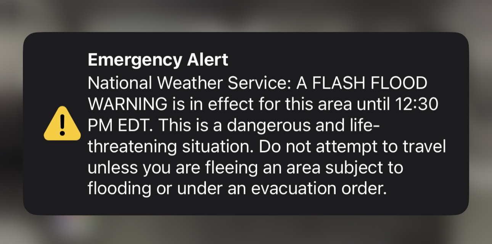
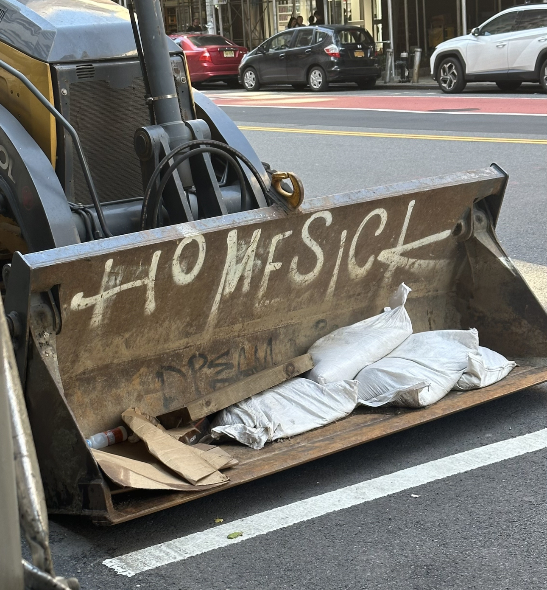
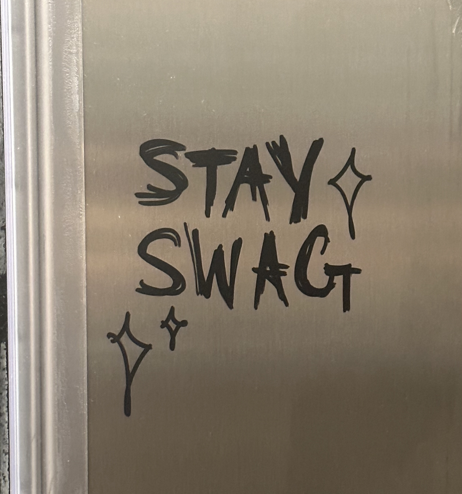
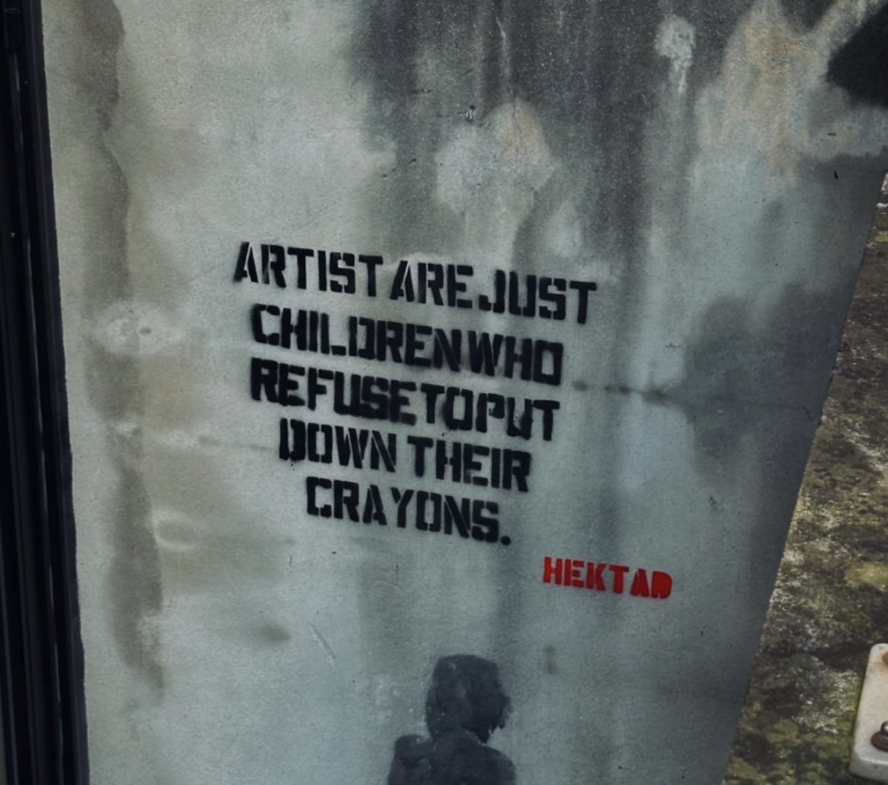
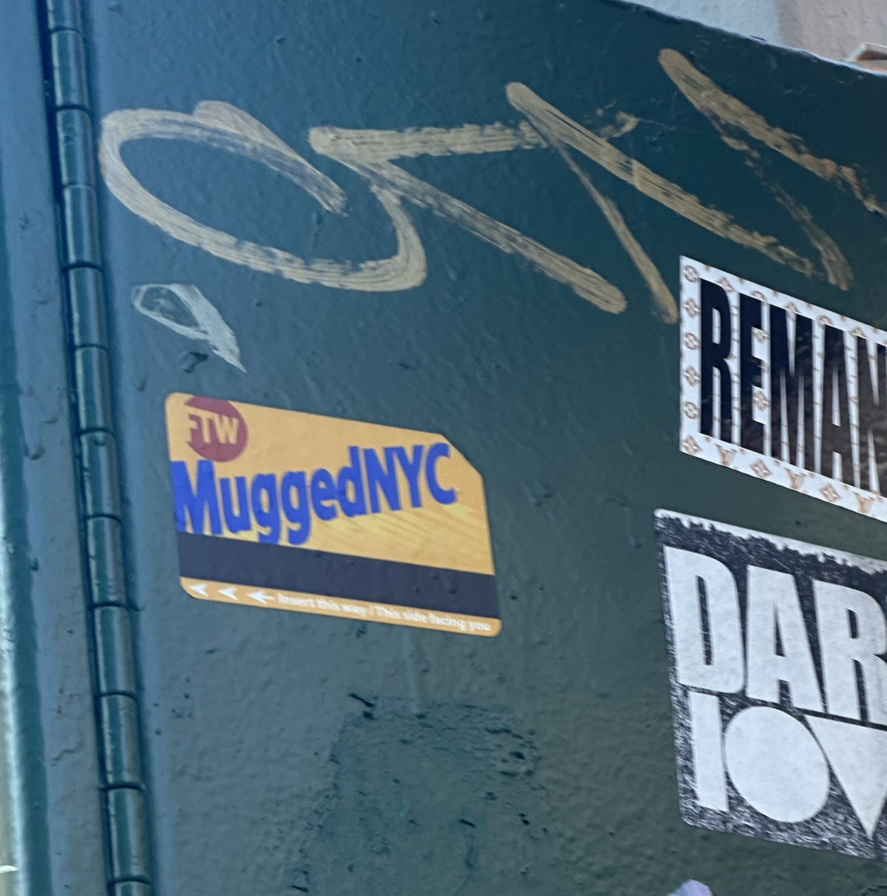
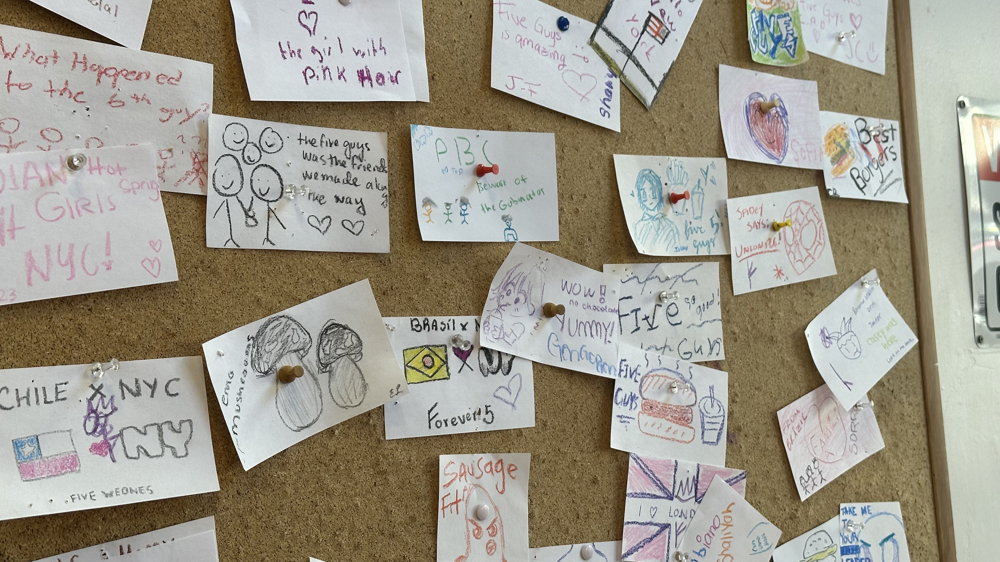
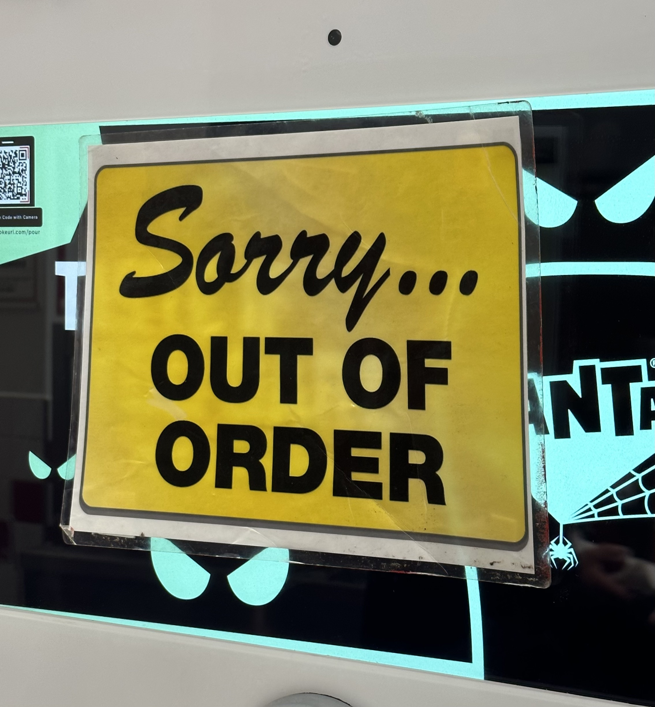
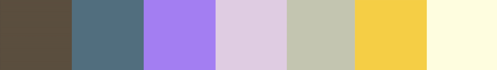
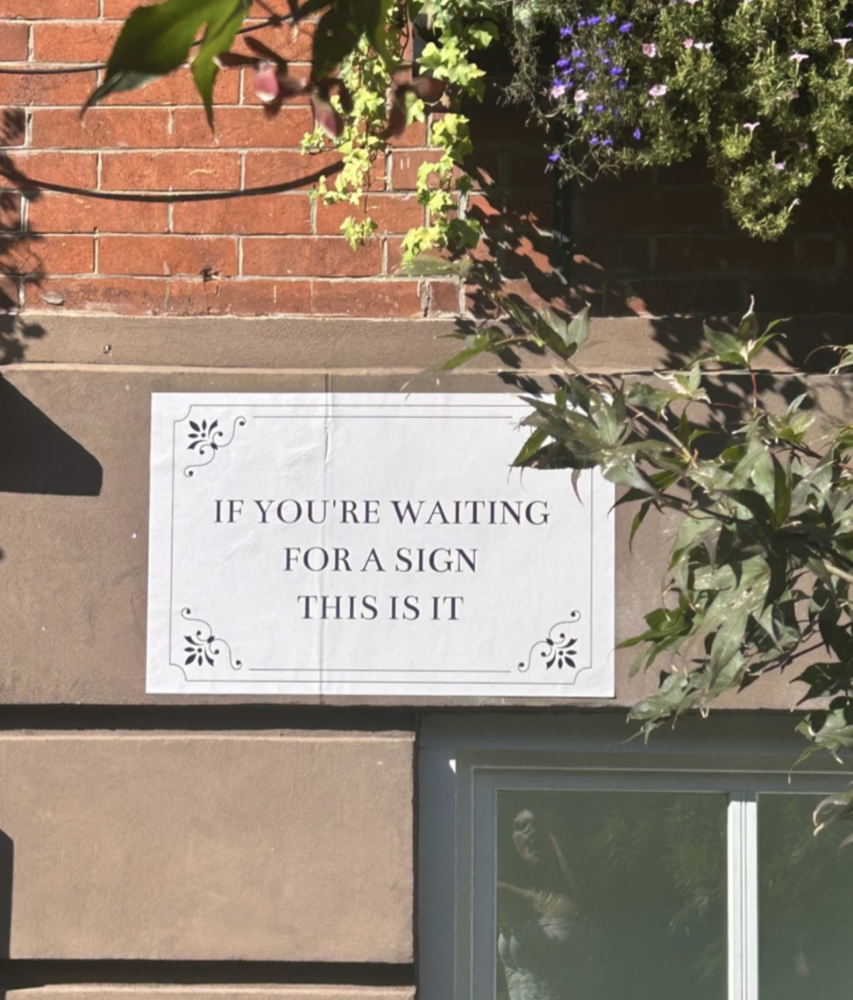

10/01/2023
Signs and Colors
Do you also look for a sign before you go ahead with the decision? Many times this week, I said to myself or the universe, or whoever it is that's in control of these things, to send me a sign. Send me a sign and I'll do it. Do I believe in "signs", I don't know to be honest. I think, sometimes when you really want to do something (or not) you begin to see signs. You've already made the decision in your head, you just need reassurance from a stupid sign. Then, sometimes it's not a magical sign from the universe, it's a notifciation on your phone. Like the one from this past Friday. (look below) I was sitting at my 9am Friday lecture when all of our phones made a jarring noise to indicate the flood in the city.


homesick
A sign that makes you think of home.

Stay Swag Friends!
A sign that makes you wanna stay swag.

Buy Flowers!
A sign that makes you wanna buy flowers for your friend.

You are an artist!
A sign that makes you wanna create :)

Mugged!
A sign that you relate to hahaha

A sign about love
(For Food)

OUT OF ORDER
A sign that the soda machine isn't working :(
(no signal)
Waiting for the right time,
I'm looking for a sign,
When will the universe say,
Everything will be fine.
I know the answer in my head,
I'm walking around the block looking ahead,
It's scary but I know it's correct,
It's a leap of faith,
I'm willing to take.
I don't need a sign to tell me my faith.

Hover over to see the colors of the week!

The sign you've been looking for
(DO IT! DO IT! DO IT!)